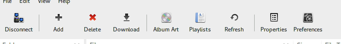

gMTP Usage
run
$ gmtp
To start gMTP.
Toolbar

The main Toolbar contains the main functions available for using MTP based devices, or alternative use the main menu or right click on the file area to gain access to basic file operations. All of these are self described.
Working with Files and Folders
The default view of the device, is to list all files and folders within the main window. Different columns
for display may be chosen from the View menu. Below is a screen shot of all the different icons
that are shown within gMTP to signify different file types.

Starting from the top these are:
- Folders
- Generic Files
- Plain text Files
- Playlist Files
- Multimedia Files
- Audio Files
- Album Information Files
- Image Files
All file operations can be accessed from the File menu, or alternatively, right clicking within the
view area. Double clicking on a file will download it to your PC/Laptop, and double clicking on a folder will access
the contents of the folder. Folders with .. let you move up in the folder structure, (go back to the
previous folder).
Drag'n'Drop support is enabled for uploading files to the device. Simply drop the desired files/folder into gMTP to upload the files/folders to the device.
Preferences
Application preferences may be accessed via the toolbar, or through the Edit > Preferences menu.
Use the Preferences to set upload and download paths. (Note: the last upload/download path is saved when you
exit the application).
- Toolbar style.
Set the toolbar style. Icon = Icons only, Text = Text only, Both = Both text and Icon are to be shown. To disable the toolbar completely, use the View->Toolbar menu item. - Attempt to connect to Device on startup.
Enable to auto connect to a device when gMTP starts. - Utilize alternate access method.
Enable to use uncached mode for connecting to a device. Note, that when this is enabled, the folder view is disabled completely and moving files is not possible. (Use this option is you experience issues either connecting, browsing or performing file operations with the current connected device). - Confirm File/Folder Delete.
Enables the confirmation of file delete operations. - Prompt to Overwrite file if already exists.
Enables the confirmation dialog if the correct file operation will overwrite another file. - Suppress Album Errors.
Enable this option if your device does not support album metadata, and you don't wish to see errors related to this missing device functionality. - Treat all media as regular files.
Enable this option if your device has issues with receiving track information from gMTP, or if you wish to not have gMTP display/obtain additional information from media/music files. - Prompt to add New Music tracks to existing playlist.
Enables this to be prompted for automatic playlist management when uploading music files to the device. - Ignore path information when importing playlist.
Enable to have gMTP ignore file path information when importing playlists onto the device. (Attempt to find the track irrespective of the folder it resides in). - Always show download path.
When downloading files from the device to the host PC, always show the download location dialog to select the download path.
Playlists
gMTP is able to import and export playlists in m3u format, with some restrictions. These restrictions are:
- EXTM3U tags and information is ignored.
- A "#GMTPPLA: " tag can be used to set the playlist name. This tag may exist anywhere in the file.
For example to set the playlist name to "Good Songs", then use "
#GMTPPLA: Good Songs" within the m3u file on it's own line. If this tag is not found, then the m3u filename is used as the playlist name (minus the "m3u" file extension). - All paths indicated within the m3u playlist file are expected to be relative based on the file location within your MTP device, and NOT relative to the location of the m3u file itself within the PC local filesystem. You may set the "Ignore path information when importing playlist" setting in preferences so that gMTP will ignore any file path information and search all folders for the music file.
- All files indicated within the m3u must exist within the current mounted storage device for those devices that support or have multiple storage pools. (eg Mobile Phones, Tablets).
- If no files are located on the device as indicated within the m3u playlist file, then the playlist will not be created.
FAQ
Q. What is MTP?
A. MTP = Media Transfer Protocol. MTP has been adopted by most major MP3 and Mobile Phone manufacturers as the
method of talking to devices to upload/download files to/from a PC.
See Media Transfer Protocol for more information.
Q. Why doesn't gMTP support my iPod or Creative Nomad player
A. These devices do not use MTP for moving data to/from a device. Apple iPod uses it's own custom protocol
in additional to USB Mass Storage and Creative devices use NJB.
Q. I have a MTP enabled device and it is connected to my PC, but it doesn't get detected by gMTP?
A. Most devices are capable of using different modes to talk to your PC, so ensure that the device is in MTP mode.
A. Or, libmtp doesn't know about your device or how to handle it correctly. Run $ mtp-detect to see
if it can be found.
A. Occasionally, some devices become confused if you connect and disconnect them in gMTP, but do not physically
disconnect/reconnect them. In this instance, close gMTP, physically disconnect and reconnect the device, and
restart gMTP. It should connect.
Q. I have a MTP enabled device, it connects, but gMTP crashes or the device resets?
A. There may be a bug in gMTP or libmtp that is causing the crash. Please file a bug report with the gMTP project ticket system
and it will be looked at.
A. Some MTP implementations on devices are horribly broken, or have known issues with libmtp. Unfortunately there
is little that can be done about these devices except complaining to the device vendor to test their device on UNIX with
libmtp as the connection library.
Q. Do you have a list of devices that work with gMTP?
A. Unfortunately no. (I test with an iRiver Clix 2G, Toshiba Thrive tablet and HTC Desire X phone, and all of these work extremely well).
Q. I get asked which storage device to connect to when I connect to my mobile phone?
A. Some devices (notably mobile phones), have both internal storage (non-removable) and external storage (removable
storage) in the form of a micro-SD card or M2 card, and gMTP will treat these as different storage devices.
Q. Does gMTP support Albums and uploading Album Art?
A. Yes. Album data is autocreated/updated when you upload a MP3 (or other supported audio file) by using information
contained within the audio file, eg. Using the ID3 Tag information in an MP3 file. Once the Album has been created,
you can upload the album art via the Edit / Album Art menu option.
Q. Will this software work on OpenSolaris, Linux, *BSD or other POSIX Operating System
A. I have reports that it runs successfully on OpenSolaris, Arch Linux, Debian and Ubuntu.
Q. What about SPARC, ARM or other non-x86 systems?
A. It should work fine but is untested. (If libmtp and libid3tag work fine on your platform, then gMTP should as well).
Q. Do I need root access to use gMTP?
A. On Solaris 10, in general No. (If you do need root access, then double check your RBAC setup for your user
then). On Linux, in general No, as libmtp
should have set your udev rules correctly for libmtp known devices.
Q. In the file view or playlist editor, tracks have a length of 0:00?
A. The length field displayed is reliant on the track data being set correctly when the audio file was uploaded. Some
file transfer utilities do not set this information correctly (and earlier versions of gMTP are also guilty of this). Simply download
and re-upload the audio file using gMTP to correct the track data on the player.
Q. I have the same audio file loaded on my device in different formats, but the song duration is
different between them.
A. WMA, FLAC and OGG all store the song duration in header information, and this is set by the encoder used to create
the file. It may be a bug with the encoder? With MP3 files, the track duration is calculated when the file is uploaded,
so this information should be correct unless you have a corrupt MP3 file.
Q. The translations are pretty awful or just plain wrong, or why don't you have xyz language?
A. The initial translations were done using Google Translate services, so accuracy is not 100%. Please email me with
corrections to existing translations. If you would like a particular language added, and are happy to assist, please
let me know or simply email me with the correct *.po file with the translations for your language.
Q. I'm using French Canadian (fr_CA.UTF-8) as my locale on Solaris 10, but I don't get French
translations?
A. This is due to an idiosyncrasy on Solaris 10 and language translations. Either:
- Copy the gmtp.mo file from /usr/local/share/locale/fr/LC_MESSAGES to /usr/local/share/locale/fr_CA.UTF-8/LC_MESSAGES, and restart gmtp.
- or, create a symlink fr_CA.UTF-8 pointing to fr in /usr/local/share/locale using 'ln -s fr fr_CA.UTF-8'.
French translations should now be present. (Technical information: On Solaris, the gettext() call will only look in the current locale folder as defined by the LC_MESSAGES environment variable and not the base language folder as well for translations, so if the locale is set to 'fr_CA.UTF-8', gettext() will only look in that locale folder and not 'fr' as well - which is what the GNU version of gettext() does). This applies to all languages on Solaris 10. For Linux/FreeBSD uses this should not be an issue as most will use the GNU version of gettext().
Q. The column view options do not appear to be working?
A. The gconf schema was updated in v0.8. Please update your local schema file.
Q. I'm attempting to install gMTP from source and it's complaining about missing files?
A. Please ensure all dependencies have been installed prior to attempting to build gMTP.
A. Some operating systems separate header packages (needed to build software) from the main software component package.
Please ensure these are installed as well.
A. On some Linux distributions, id3tag is installed without a matching PKGCONFIG file which is required to build gMTP.
An example id3tag.pc file can be found on the Installation page, under 'id3tag'.
Q. I'm attempting to move some files, and I always get an error. What's the issue?
A. gMTP uses the MTP function 'moveObject' to perform move operations. However only a few devices actually support this
function, and if they do actually advertise it supports the function, it may be horribly broken. Basically complain to
your device manufacturer that it doesn't support this function, and that they should add it in, since it is actually part
of the MTP Specification. To see if your device has this option available, run 'mtp-detect' and look under the supported
commands for command '1019: MoveObject'. The other method I could use is to download the files/folders to your PC,
re-upload them again and delete the originals, however this is very time intensive, and in these cases it's better than
the user do this themselves.
Q. I have an Android device and .... isn't working?
A. There are a few answers or explanations with Android.
- Some device vendors have opted to use their own MTP software stack with their device, and some of these implementations are horribly broken. Contact your device manufacturer for further assistance. (AFAIK, this is primarily Samsung with Android 2.x devices, and some lesser known Chinese developed handsets often rebadged as Carrier own-brand handsets).
- Android 1.x-2.x doesn't have a native MTP implementation, so if your device has MTP functionality, see the above comment.
- Android 3.x-4.x has native MTP functionality, but is missing some features
and does have some bugs in the implementation. Some noted issues:
- Does not support albums or album metadata. So you can't upload custom album art.
- Some users have reported issues with Playlist support. (Try to get a newer revision of your version of Android).
- Android 3.2 has a nasty bug, in that an application is unable to call the Storage APIs more than once in a session. gMTP 1.3.2+ works around this by caching the device storage information. (but not the file listing or related metadata).
- Samsung Galaxy and Google Nexus devices have connectivity issues, that I'm hoping can be resolved via patches to libmtp. Sorry, there is nothing I can do about that situation. Complain to Samsung and Google, and try to get them actively involved in libmtp.
Q. What is the alternate access method?
A. There are two main methods of accessing MTP based devices, either cached or uncached. gMTP
originally only used the cached method as this worked well for the majority of devices. (All
device information including file/track information was cached in the application for performance
reasons). With the introduction of Google's MTP stack in Android 3.x, it changed many things, in
particular that it only worked well in uncached mode. (Android's MTP stack as far as I know is
server implementation that shares the underlying resource with the device and the host PC, unlike
the usual MP3 scenario, where the once the host device took connect it was given sole access to
the media storage). Because of this shared nature, using cached information in the application
is a "really bad idea", since you're relying on information that may change. So gMTP now has
the ability to use the uncached mode as well, which should improve stability with Android 3.x and
newer devices that use MTP. The downside to the uncached mode, is that every action now requires
getting data from the device, which may be painful on slower or congested USB busses...
(I would rather stability for users, and have them wait 0.5secs over an unstable and poor
experience using the application). (Alternate access method = uncached mode).
Q. What does the "g" part in gMTP stand for? It isn't to denote that you're a
GNOME based application, is it? (If it does, that's lame).
A. While many GNOME applications have a leading G, and likewise many KDE
applications have a K, the "g" actually stands for "graphical", as in:
"graphical MTP", since its a graphical interface for MTP based devices...
Sorry to disappoint people.